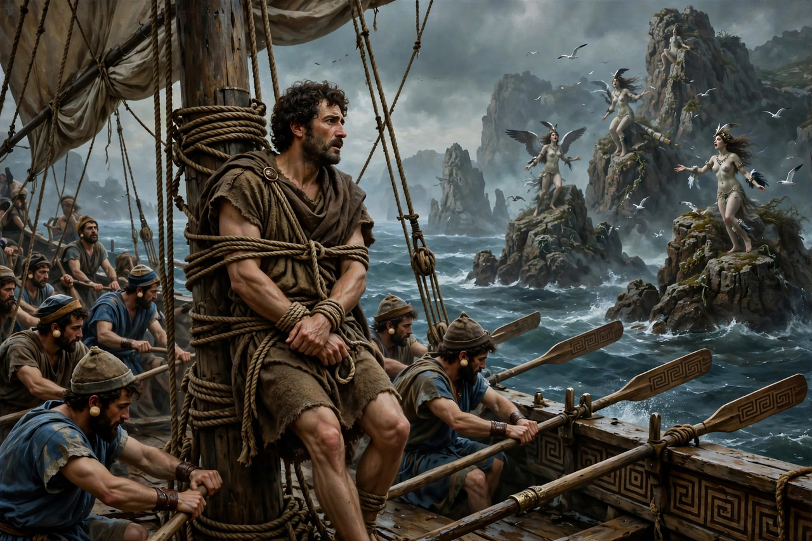

| Author | Attributed to Homer |
|---|---|
| Language | Homeric Greek |
| Composed | c. 8th century BC |
| Length | 12,109 lines in 24 books |
| Subject | Odysseus's ten-year journey home from Troy |
The Odyssey is one of two major ancient Greek epic poems attributed to Homer. It is a sequel in story to the Iliad and is fundamental to the Western literary canon. The poem follows the Greek hero Odysseus, king of Ithaca, on his ten-year journey home after the Trojan War — a voyage beset by monsters, gods and shipwreck — while at home his wife Penelope and son Telemachus fend off a crowd of suitors consuming his estate.
The poem opens ten years after Troy's fall: Odysseus languishes on the island of the nymph Calypso, while Telemachus, now grown, journeys to Pylos and Sparta for news of his father. Released by order of Zeus, Odysseus reaches the land of the Phaeacians and, at their court, narrates his wanderings: the Lotus-Eaters; the blinding of the Cyclops Polyphemus, which earns the wrath of Poseidon; the witch Circe, who turns his men to swine; the descent to the underworld; the Sirens, whose song he hears bound to the mast; Scylla and Charybdis; and the slaughter of the cattle of the Sun, after which his last ship and crew are destroyed.
The Phaeacians carry Odysseus home to Ithaca. Disguised as a beggar with Athena's help, he tests the loyalty of his household, is recognised by his old dog Argos and by his nurse Eurycleia from a scar, and — with Telemachus and two loyal herdsmen — wins Penelope's archery contest, stringing his great bow and shooting through twelve axe-heads. He then slaughters the suitors and is finally recognised by Penelope through the secret of their marriage bed built round a living olive tree. Athena imposes peace on Ithaca.
The poem is a tale of identity, disguise, cunning (mētis) versus brute force, hospitality (xenia), loyalty and homecoming (nostos). Its non-linear structure — beginning in medias res with the hero's adventures told in flashback — together with the Iliad established the template of the Western epic.
The Odyssey has been reworked by Dante, Tennyson, Cavafy and Joyce, whose Ulysses (1922) parallels its episodes in a single Dublin day. Emily Wilson's 2017 translation was the first published English version by a woman. The word "odyssey" has entered common usage for any long, eventful journey.